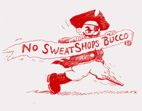
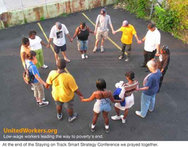

Submitted on Tue, 06/20/2006 - 1:11pm
For Immediate Release
June 18, 2006
Contacts: Celeste Taylor, Board of SweatFree Communities - 412.241-1339
Mongezi Nkomo, Director of Azania Heritage International - 412-361-4025
Tom Kertes, United Workers Association of Maryland - 410-522-1053
In an unsolicited letter to the Pittsburgh Anti Sweatshop Community Alliance dated April 24, 2006 Major League Baseball Vice President Ethan G. Orlinski said the following, “All of Major League Baseball Properties licensees are contractually obligated to comply with all applicable labor laws. To the extent that they are apprised of any infractions, they are expected to rectify them immediately. We are unaware of any such infractions.”
Submitted on Tue, 06/13/2006 - 1:43am
Sweatshop foes plan All-Star protest
Group won't rule out disruptive activities
Tuesday, June 13, 2006
By Rich Lord, Pittsburgh Post-Gazette
A group opposed to sweatshop labor plans to hold a "carnival" on the Roberto Clemente Bridge during the All-Star Game, and has not ruled out disrupting festivities if the Pirates do not take a stand against bad garment industry labor conditions, its leaders said yesterday.
The Pittsburgh Anti-Sweatshop Community Alliance intends to hand out leaflets, hold a puppet show, display posters colored by children, and conduct a "wheel of wages" game illustrating the low pay and long hours some overseas workers face, said one of its organizers, Michelle Gaffey of Homestead.
Submitted on Tue, 05/23/2006 - 11:38am
May 22, 2006
Kevin McClatchy
Pittsburgh Pirates Baseball Club
PNC Park at North Shore
115 Federal Street
Pittsburgh, PA 15212
Mr. McClatchy,
With the 2006 All Star Game just 50 days away, we want to clarify with the ownership of the Pittsburgh Pirates Baseball Club what it is we know about many of the factories sewing our Pirates and All Star logo apparel and what should be done, from the team’s perspective, to protect the rights of workers and to meet the high expectations of Pittsburghers.
We must first explain that the vast majority of Pirates’ logo apparel is produced in sweatshop conditions. We know this because the vast majority of the global apparel industry is a sweatshop and the sampling of testimony that we have been able to accumulate from places like Haiti, Bangladesh, and China, where the Pirates’ logo is sewn, confirms this for Pirates’ logo apparel, too. We know that Pirates’ logo apparel is sewn in the same factories where other Major League Baseball (MLB) team apparel is sewn and that most arrangements for production of Pirates’ logo apparel is made by MLBP, the legal owner of the Pirates’ logo, and that MLBP distributes revenue via a licensing revenue sharing agreement back to the teams.
Submitted on Sun, 04/16/2006 - 11:27pm
 Image pictured at right: From left to right, John Rudiak-AFSCME Local 2459, Celeste Taylor-SweatFree Communities Board Member since October 2005, Michelle Gaffey-Duquesne University, Kenneth Miller-Industrial Workers of the World and Professor Dennis Brutus-University of Pittsburgh speaking in favor of strong enforcement of our high standards of workers' rights on April 4 at Pittsburgh's City Council. This was the 38th anniversary of Martin Luther King's assasination. Shortly after this picture was taken the PA AFL-CIO passed a strong resolution in support of workers in the global apparel industry.
Image pictured at right: From left to right, John Rudiak-AFSCME Local 2459, Celeste Taylor-SweatFree Communities Board Member since October 2005, Michelle Gaffey-Duquesne University, Kenneth Miller-Industrial Workers of the World and Professor Dennis Brutus-University of Pittsburgh speaking in favor of strong enforcement of our high standards of workers' rights on April 4 at Pittsburgh's City Council. This was the 38th anniversary of Martin Luther King's assasination. Shortly after this picture was taken the PA AFL-CIO passed a strong resolution in support of workers in the global apparel industry.
Disclaimer - The following article is reposted here because it is an issue with some relevance to the IWW. The views of the author do not necessarily agree with those of the IWW and vice versa.
Submitted on Wed, 04/12/2006 - 12:39am
Thoughts from Kertes at the SweatFree Conference
The UWA is a human rights organization. We seek to secure the human rights of all, including the right to freedom from poverty. Human rights, as articulated in the Universal Declaration of Human Rights and other human rights vision statements, are by their nature, "universal." This is important. Things universal can transcend traditional barriers, such as barriers between races, between language groups and between national and religious divisions. But human rights are not the UWA's only organizing framework. The UWA is also, at our core, an organization led by the poor themselves. While all are welcome to work with the UWA, priority is placed on developing leaders from the ranks of the poor. And this requires class identity.